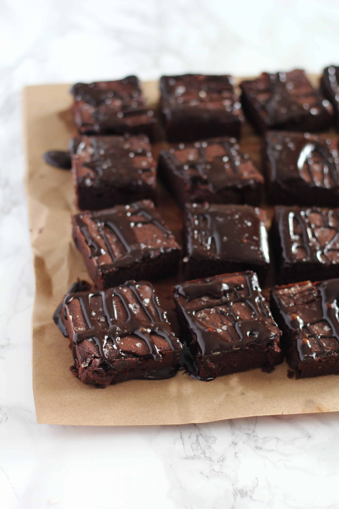
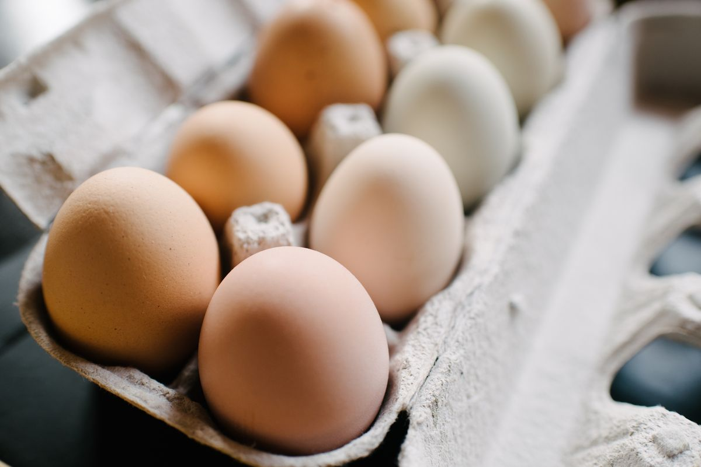
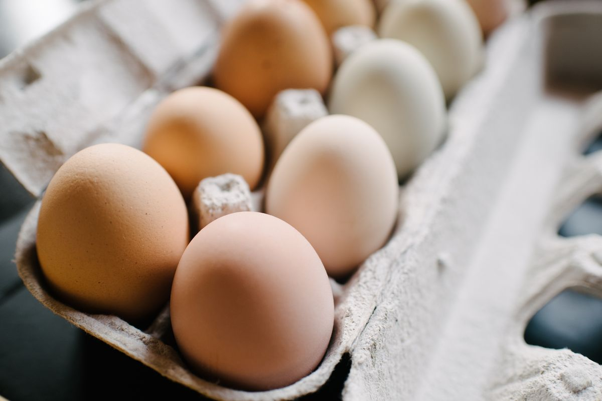

Chocolate Chip Banana Bread

This is a tried-and-tested recipe that I have used numerous times for making the perfect chocolate chip banana bread! Not only does it help utilize the bananas that have slowly overripened at the back of the fridge, it ends up creating an incredibly delicious, and relatively healthy, dessert.
Ingredients

- Cooking spray
- cups (240 g) all-purpose flour
- 1 tsp. baking soda
- 1/2 tsp. kosher salt
- 1 large egg plus 1 egg yolk
- 1 cup (200 g) granulated sugar
- 1/2 cup (1 stick) unsalted butter, melted
- 1/4 cup sour cream
- 1 tsp. pure vanilla extract
- 3 ripe bananas, mashed
- 1/2 cup chopped toasted walnuts
- 1/2 cup semisweet chocolate chips
Steps
- Preheat the oven to 350º. Line a 9"-by-5" loaf pan with parchment and grease with cooking spray.
- In a medium bowl, whisk flour, baking soda, and salt.
- In a large bowl, mix egg, egg yolk, granulated sugar, butter, sour cream, and vanilla. Add bananas and stir until combined. Gradually add dry ingredients to banana mixture until just combined.
- Fold in walnuts and chocolate chips and transfer to prepared pan.
- Bake bread until a tester inserted into the center comes out clean, about 1 hour. Let cool 10 minutes in pan, then invert onto a wire rack and let cool completely.


Double Chocolate Cookies

My daughter learned to make these cookies at a baking camp at Zingermanns and has tweaked the recipe to fit the taste buds of her siblings. They are extremely sugary so the salt helps to balance it. Note, these cookies are best eaten very quickly.
Ingredients

- Unsalted butter
- Granulated Sugar
- Packed light or dark brown sugar
- Large egg
- Pure vanilla extract
- Semi-sweet chocolate chunks (melted)
- All-purpose flour
- Natural unsweetened cocoa powder
- Baking soda
- Salt
- Semi-sweet chocolate chunk
Steps
- In a mixing bowl cream together the butter, granulated sugar, and brown sugar
- Add the egg and vanilla extract and beat well
- Add the melted chocolate
- In a separate bowl combine the flour, baking soda, cocoa powder and salt
- Combine the wet and dry ingredients
- Add the unmelted chocolate chunks.
- Form 15 cookies and place on a baking sheet.
- Cook for 12 to 13 minutes at 350 degrees.


Fudgy Date Brownies
This is a recipe that swaps processed sugar for dates! Great for anyone trying to cut processed sugar.
Ingredients

- 1 1/2 cups pitted dates
- 1 cup hot water
- 3/4 cup unsalted butter softened (1 1/2 sticks)
- 2 cold eggs
- 1 teaspoon vanilla extract
- 3/4 cup cocoa powder
- 1/2 cup plus 2 tablespoons all purpose flour
- Sea salt for sprinkling
- Grease or line an 8x8 baking pan. Preheat oven to 350F.
- In a food processor or blender, puree the dates and hot water until smooth. Measure out a cup of the paste (mine yielded exactly a cup,) and transfer to a large bowl with the butter.
- Cream the butter and date paste until smooth.
- Add the eggs, one at a time and vanilla extract, mixing until fluffy and smooth.
- Add the cocoa and flour, and mix on low until well combined.
- Spread batter into prepared pan, smoothing with the back of a spoon. Sprinkle a little sea salt on top.
- Bake for 18-23 minutes, or until edges are set. Allow pan to cool while you prepare the glaze.
- Whisk together the butter, honey and cocoa powder. Add vanilla and whisk until smooth. If the glaze seems a little runny- add a dash more of cocoa powder. If it seems too thick- you can add a splash of milk. Drizzle over the brownies and sprinkle with more sea salt.Brownies will last for up to a week in a sealed container in the fridge.
Steps
 
